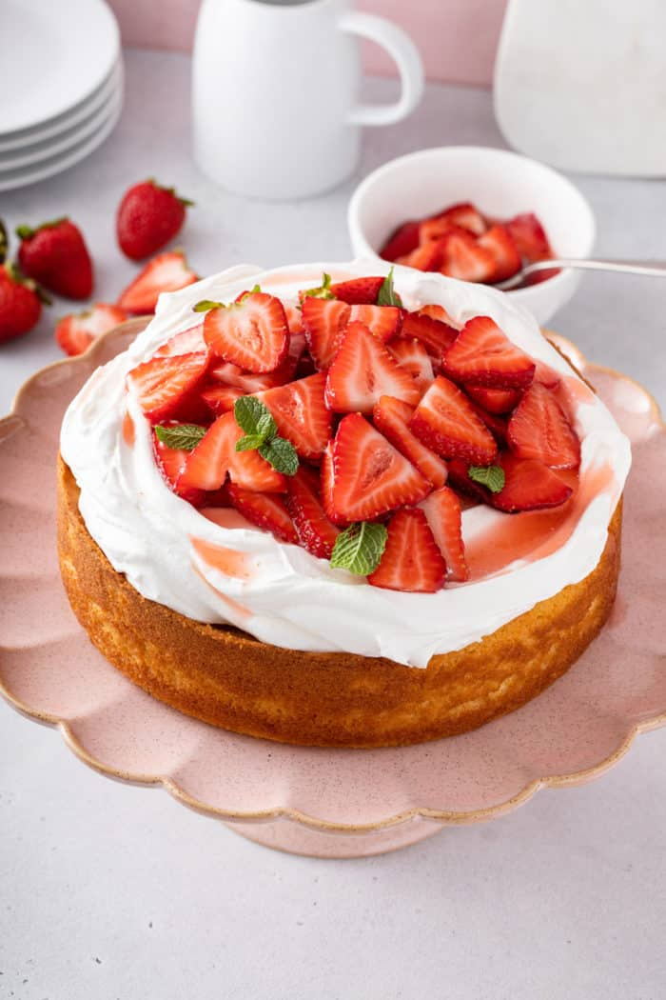

Strawberry Shortcake
A yellow sponge cake is piled high with whipped cream and glazed strawberries in this beautiful strawberry shortcake recipe. This is one impressive cake that will have everyone asking for a second slice.This homemade version of strawberry shortcake takes a simple homemade cake, freshly whipped cream and jam -coated strawberries to make a perfect summer dessert for any occasion.
Ingredients
- ½ cup whole milk
- ¼ cup unsalted butter 4 tablespoons / ½ stick
- 1½ cups all-purpose flour
- 2 teaspoons baking powder
- 3 large eggs room temperature
- ¾ teaspoon kosher
- ¾ cup granulated sugar
- 2 teaspoons vanilla extract
- ⅓ cup water
- ⅓ cup granulated sugar
- 2 tablespoons quality strawberry jam
- 2½ cups sliced strawberries or mixed berries
- Homemade whipped cream or whipped topping
Instructions
- Preheat to 350°F. Lightly coat an 8×3-inch cake pan with nonstick spray, then line the bottom of the pan with parchment paper and lightly spray the parchment with nonstick spray.
- In a small saucepan over medium heat, warm the milk and butter, stirring, until the butter has fully melted. Set aside to cool.
- In a mixing bowl, whisk together the flour and baking powder.
- Using an electric mixer on low speed, beat eggs in a large bowl, gradually increasing speed to medium-high, until well beaten. Add salt and continue to beat until mixture begins to foam, about 1 minute.
- Reduce mixer speed to low and gradually add in the sugar; increase speed to high and beat until the eggs are voluminous, and very light and pale yellow in color, about 5 minutes. With the mixer back on low speed, add in the butter and milk mixture and vanilla and mix until combined, about 45 seconds.
- Gently fold the dry ingredients into the wet ingredients using a rubber spatula. Scrape the batter into the prepared pan.
- Bake in preheated oven until the cake is golden golden and a tester inserted into the center comes out clean, 30-35 minutes. Let cool for about 15 minutes.
- While the cake is cooling, make the simple syrup by combining the water and sugar in a small saucepan. Bring to a boil, stirring, until sugar has dissolved. Remove the pan from the heat and stir in the jam. Allow to cool for about 10 minutes.
- Trim the top of the cake using a large serrated knife to create an even cake top. Use a pastry brush to brush about half of the simple simple syrup onto the top of the cake, reserving the rest of the syrup for the berries. Allow the cake to cool completely.
- Just before serving, gently toss the berries with the remaining simple syrup. Top the cake with whipped cream and pile the berries onto the whipped cream.